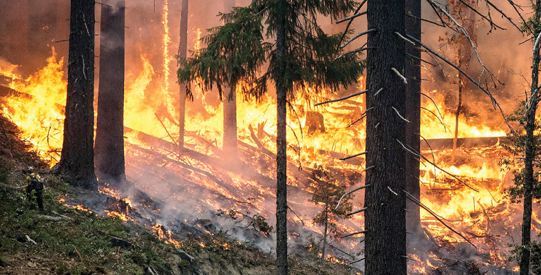
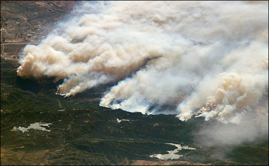
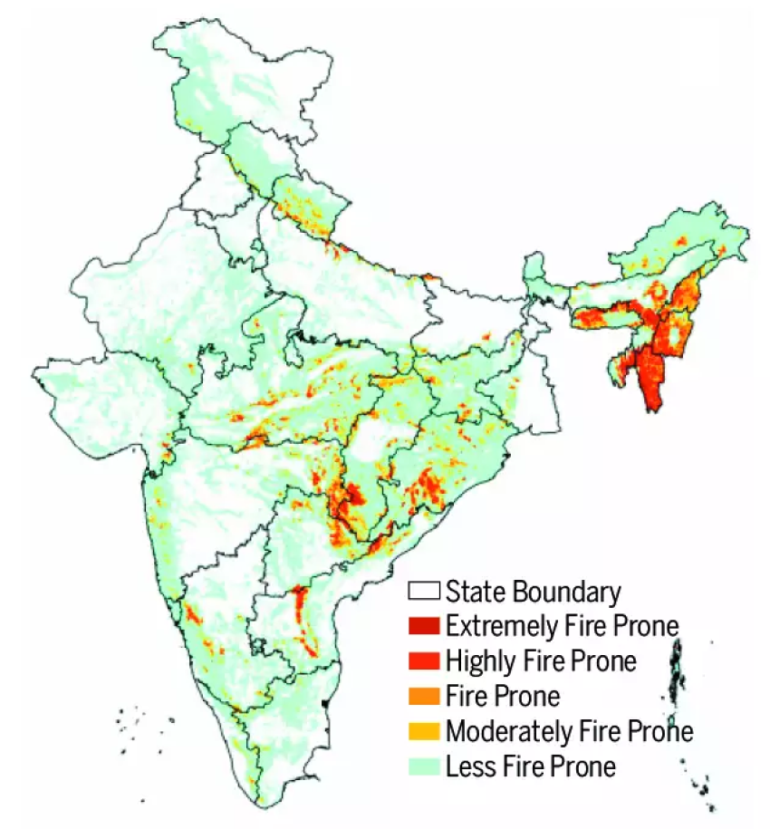
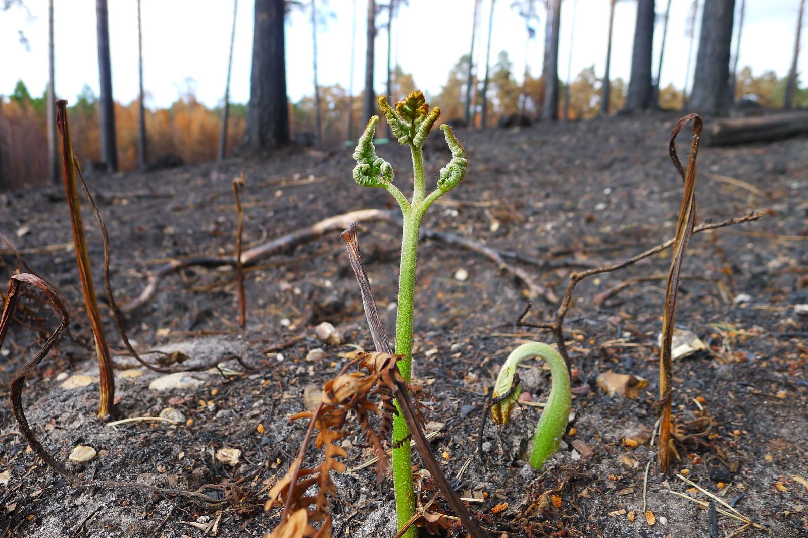
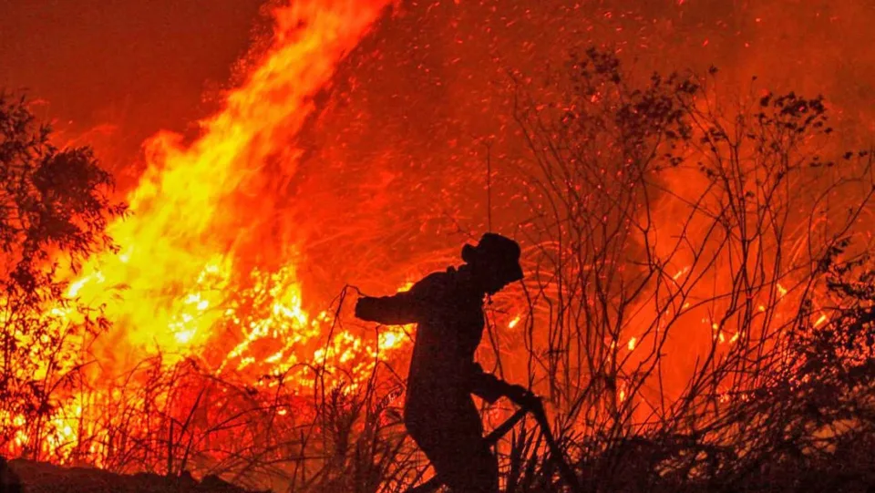
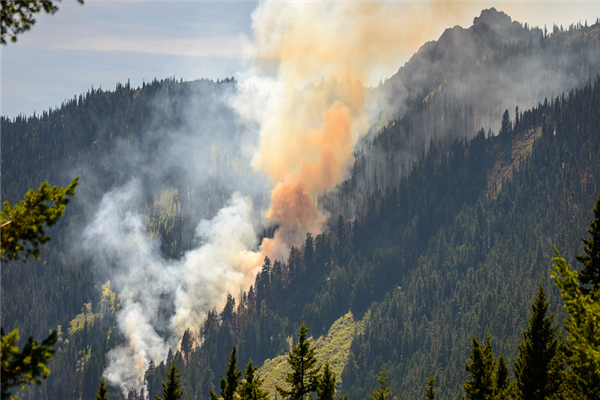

Fire ecology is a branch of ecology that focuses on the origins of wildland fire and its relationship to the environment that surrounds it, both living and non-living. A wildland fire is defined as any fire that is burning in a natural environment. Fire ecologists recognize that fire is a natural process, and that it often operates as an integral part of the ecosystem in which it occurs. The main factors that are looked at in fire ecology are fire dependence and adaptation of plants and animals, fire history, fire regime and fire effects on ecosystems.
Fire Ecology
an essential role.

In the 1930s, researchers in the southern United States argued against the negative perspective that has surrounded fire, with the belief that all fire is bad. It was realized that the devastating picture painted by huge-scale fires produced fear in the minds of the public (and in politicians and scientists alike), and that this generated detrimental results in response to any wildland fires. These researchers recognized that there are species of plants that rely upon the effects of fire to make the environment more hospitable for regeneration and growth. Fire in these environments prepares the soil for seeding by creating an open seedbed, making nutrients more available for uptake and often killing plants that are invading into the habitat and competing with native species.

Fire regime refers to the patterns of fire that occur over long periods of time, and the immediate effects of fire in the ecosystem in which it occurs. There are many ways to define a fire regime. Fire regime is a function of the frequency of fire occurrence, fire intensity and the amount of fuel consumed. The frequency is determined largely by the ecosystem characteristics, the duration and character of the weather (whether the season is drier or wetter than normal, etc.) and ignition sources. The intensity of a fire is determined by the quantity of fuel available, the fuel’s combustion rates and existing weather conditions. Interactions between frequency and intensity are influenced by wind, topography and fire history. There are many other factors that can come into play when talking of fire regimes, though this simple definition will work for most cases.

The ecological benefits of wildland fires often outweigh their negative effects. A regular occurrence of fires can reduce the amount of fuel build-up thereby lowering the likelihood of a potentially large wildland fire. Fires often remove alien plants that compete with native species for nutrients and space, and remove undergrowth, which allows sunlight to reach the forest floor, thereby supporting the growth of native species. The ashes that remain after a fire add nutrients often locked in older vegetation to the soil for trees and other vegetation. Fires can also provide a way for controlling insect pests by killing off the older or diseased trees and leaving the younger, healthier trees. In addition to all of the above-mentioned benefits, burned trees provide habitat for nesting birds, homes for mammals and a nutrient base for new plants. When these trees decay, they return even more nutrients to the soil. Overall, fire is a catalyst for promoting biological diversity and healthy ecosystems. It fosters new plant growth and wildlife populations often expand as a result.

Fire can cause soil damage, especially through combustion in the litter layer and organic material in the soil. This organic material helps to protect the soil from erosion. When organic material is removed by an essentially intense fire, erosion can occur. Heat from intense fires can also cause soil particles to become hydrophobic. Rainwater then tends to run off the soil rather than to infiltrate through the soul. This can also contribute to erosion. In actuality, the negative effects of fires on soils are often exaggerated, and many fairly intense fires in western United States forests cause little soil damage. There is also the potential for alien plants to become established after fire in previously uninfested areas.

Approximately 90% of fires in the last decade have been human-caused, either through negligence, accident or intentional arson. Some of the fires caused by accidents and negligent acts are through unattended campfires, sparks, irresponsibly discarded cigarettes and burning debris. The remaining 10% of fires are caused by lightning strikes.
